Monday, November 6, 2017 – Just because the grass is greener on the other side doesn’t mean you should always be content with the grass on your side
I’m at a careers crisis again.
I guess it started after my last interview rejection. Ever since then I’ve been preoccupied with improving my interview skills. But today my preoccupation took another turn. I was productive in the morning, getting through a few readings for one of my papers. But then I started thinking about career paths again. The time probably would have been better spent researching for my paper. Instead, after lunch, I started going through my notes, my list of possible career options, things that got me excited. Because I realized, while it would be great to work for a large, well-known company, the work I would be doing may no longer excite me.
The problem is, I don’t know what I would want to do, or where my “passion” lies. I want to work in cleantech and renewable energy, in the nonprofit sector and international development, in journalism and sustainable business. Is the problem that I just want to do it all? For me, there is always something out there that looks more interesting, more enticing, more exciting, and I am just stuck in my seat, looking longingly out towards the road of possibility. Isn’t that how life is—the grass is always greener on the other side.
But that doesn’t mean I should be content with the grass on my side. At lunch I talked to a friend who had interned at Facebook in software engineering but declined the return offer because she is considering law school and wanted to experience working at a small law firm. I kept asking, so do you not want to do software engineering anymore? Are you set on law? She said not necessarily, she just wants to try something different and see if it is something she wants to commit to.
I was reminded that the reason we do internships is not so that we can get a full-time offer and have a stable job once we graduate, though that would be a nice benefit. It is to explore different careers and figure out what kind of work makes us feel rejuvenated and excited, what career path would be most rewarding for us. It is a long-term process with a long-term goal. I thought about how sad it would be if I managed to get an internship in something and a few years later realize I really didn’t enjoy what I was doing. And I realized that in my worries and haste to try to get a summer internship, I was so engrossed in my short-term desires that I had completely forgotten the real reason we do summer internships to begin with.
But anyway, enough procrastinating. Back to my books on globalization and sustainable development.
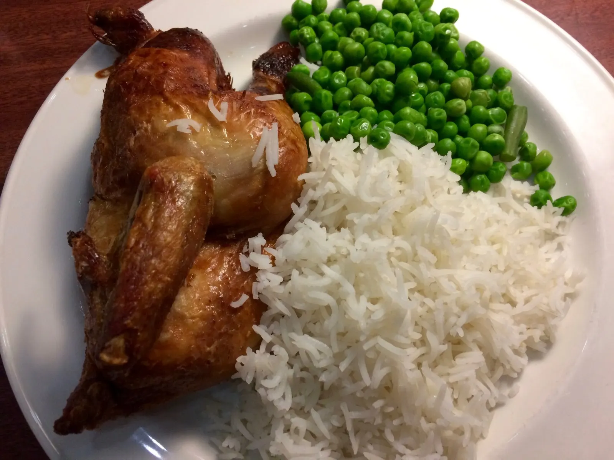
Tuesday, November 7, 2017 – Procrastination at its finest, with a team dinner mixed in
Actually felt productive this morning in the library writing my paper due at 5pm today. Why are we only productive when the deadline is imminent??
Light rain in the afternoon, for once. Glad I didn’t bring rain boots, because I did not need them.
Lunch: venison stew and mashed potato
Went to hall at St John’s College for a tennis team dinner, borrowing a gown to wear (ran there because I attended a special lecture on Brexit right before, which was super insightful and interesting). St John’s hall is like a chapel, much smaller than the one at Catz, and their pre-meal grace was longer. They served delicious food; I fully enjoyed the meal and company and would’ve stayed longer—if only I had started my essay due tomorrow at noon.
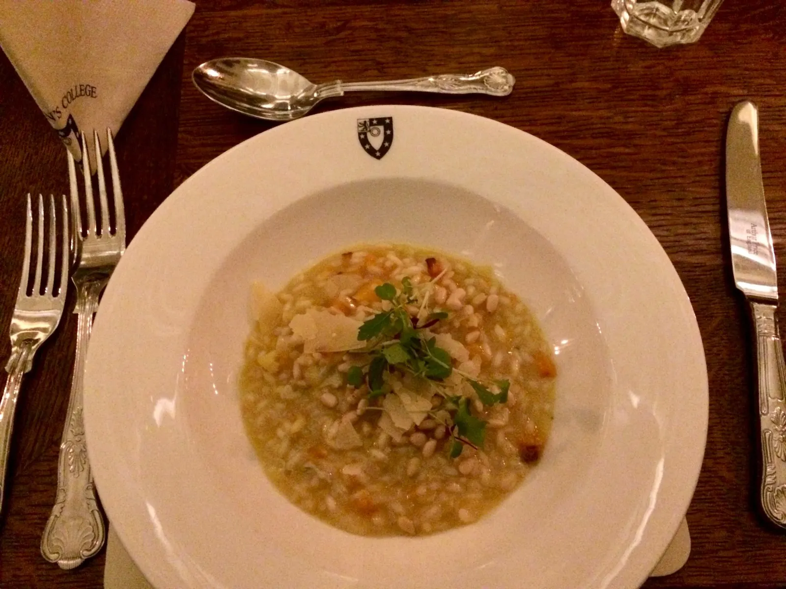
Pumpkin soup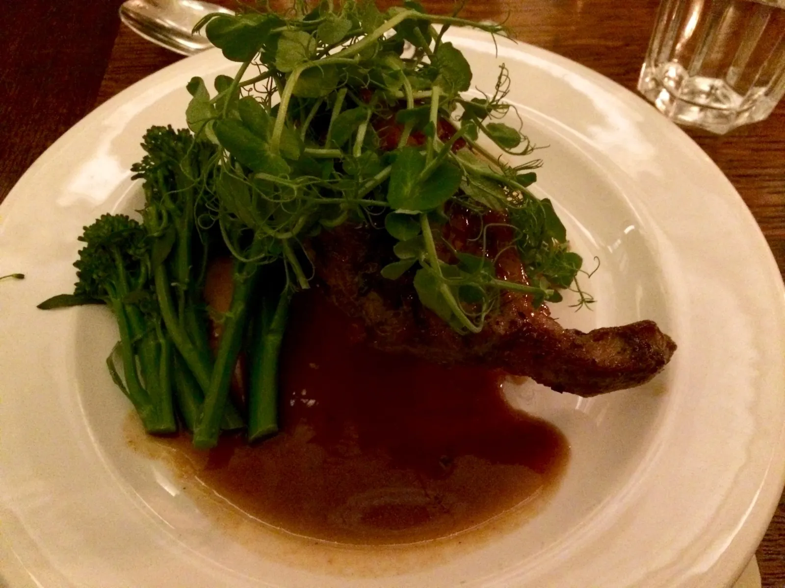
SteakBetween 8am and 3am today, I wrote two papers. Why does this keep happening lol.
Thursday, November 9, 2017 – Oxford Union debate
I butchered a phone interview this morning: I went to the social science library because there was no service in my room, only to find there was no service in the library either, so walked back towards the JCR which usually has service, but at the crucial moment the service failed me once more. By the time I got connected it was 8 minutes over and no one was in the audio conference, so I assumed the interviewers had given up. Ironically, later in the afternoon I realized because of Daylight Savings, we were 5 hours ahead of New York instead of 4 hours. So while I was writing the email apologizing for missing the interview, the interview hadn’t even begun yet. But also, why can’t Oxford just get decent, working, non-sketchy phone service?
I couldn’t come to Oxford and not attend an Oxford Union debate. So I skipped tennis practice and went to one.

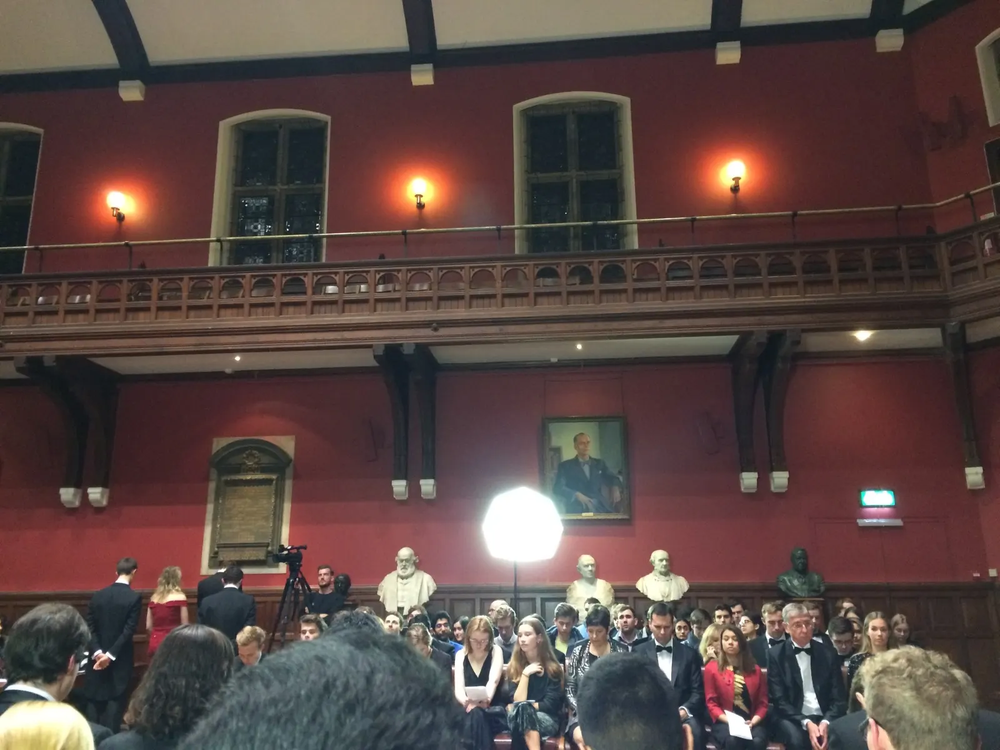

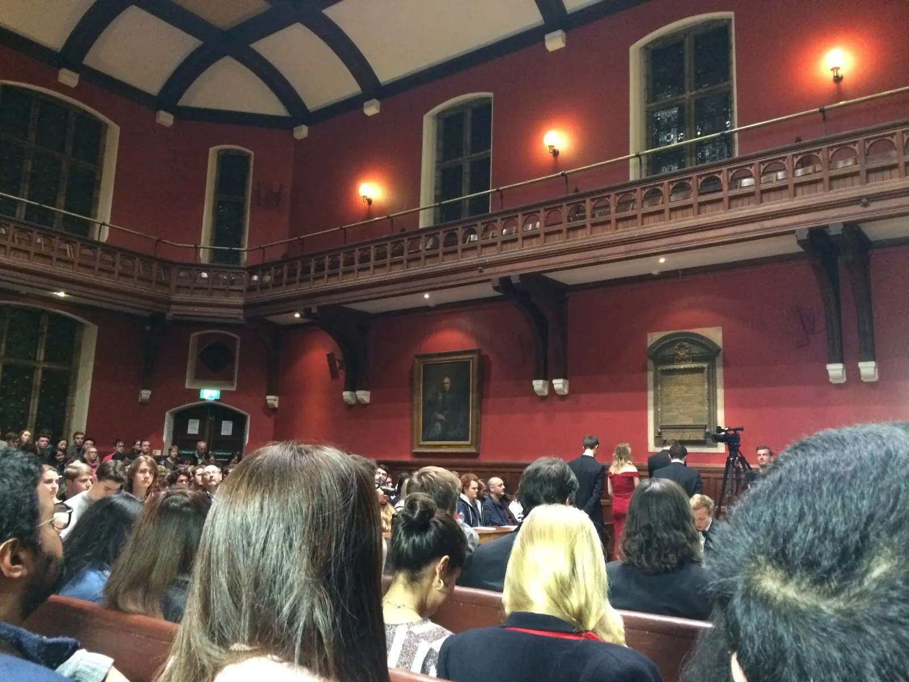
The night started off with a debate among students. The topic for tonight: This House Does Not Believe in the Right to Bear Arms. The judge would call on people to come forward and give their argument. Audience members could interrupt with an objection and the speaker could choose whether or not to take the question. The students who spoke were so good at speaking!
Then the main debate took place debating this statement: This House Believes Populist Leaders Deliver No Real Change. Debaters included students, a former Prime Minister of Hungary, a Labour MP, the Co-Founder of Leave.EU. Each gave a prepared speech, but I was disappointed that they didn’t debate amongst themselves afterwards.
One of the students was really funny; he talked so fast I didn’t pick up most of what he actually said, but I was convinced solely by the way he performed—his gestures, his excitement, his acting skills and sarcastic humor displayed a knowledge and confidence that was persuasive, not to mention entertaining. Another student had a really persuasive opening speech. But how you think about the statement in question depends on how you interpret populism and change. The side in favor of the debated statement pointed out, to which everyone laughed, that real change isn’t always positive change. And how do you define populism? Is populism appealing to the common people? But isn’t that democracy? Nevertheless, I was amazed at how intelligently and fluently and elegantly everyone spoke and used their words.
Ended the wonderful evening at G&D’s Ice Cream with Kamya.
Friday, November 10, 2017 – London: A nice break from studying
Headed to London in the afternoon; I was watching Les Miserables in the evening with Claudia and figured I would go in a little early and do some sightseeing. Stopped at Starbucks on a whim, craving a caffeine boost to wake me up, but regretted it after spilling some on my scarf—not once but thrice.
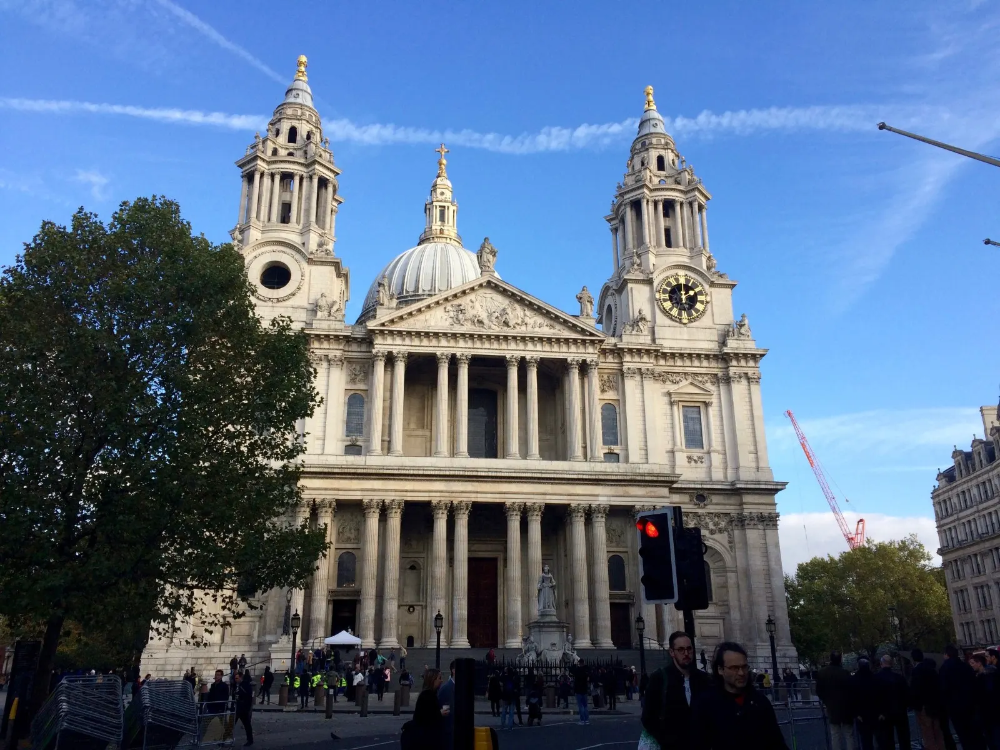
Tate Modern museum: saw art ranging from seemingly simple art
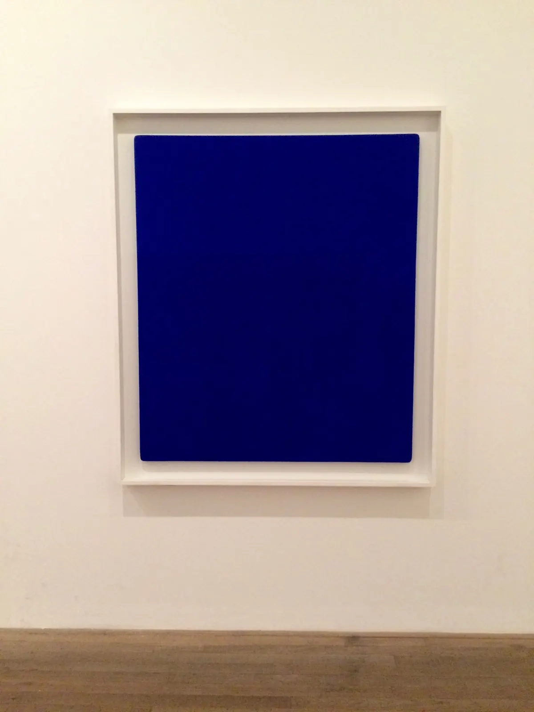
to more complex art
and art with a sense of humor.
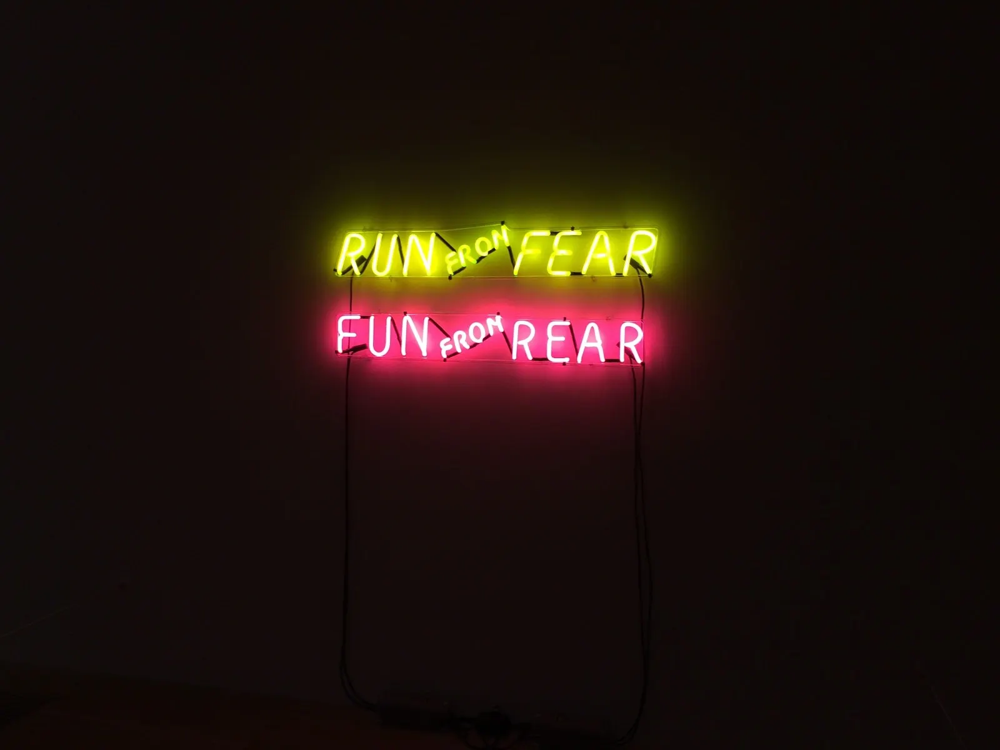
The works of art encouraged me to think about the story behind the art. Walking around and absorbing myself in the art, I felt like I had been deprived of something in the midst of work and study—something tranquil and engaging that enlivens you.
There was a section on cubism art: in the 20th century, artists started using original, throwaway materials in their art, which became associated with cubism, challenging the idea that uncertain materials are unsuitable for art. One quote I found interesting (it’s annoying how British English spells things differently):
“Colour doesn’t exist in itself, only when looked at. The fact that ‘colour,’ uniquely, only materializes when light bounces off it into our retina indicates that analysing colours is in fact about analyzing ourselves.” —Olafur Eliasson
Saw all the galleries at my own leisure, then left the museum and walked across Millenium Bridge, from which I had a beautiful view of the river and city landscape:
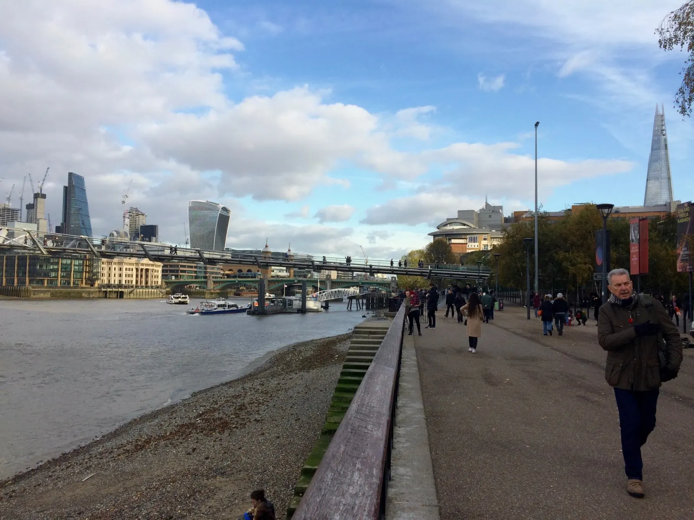
Millennium Bridge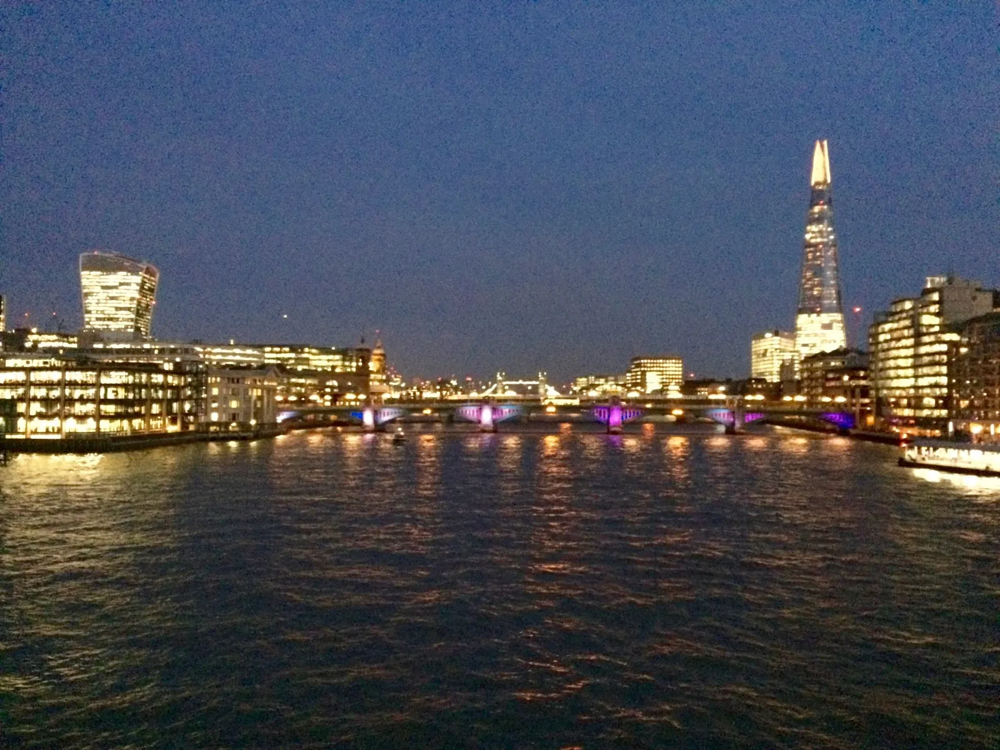
It was dark by the time I left the Tate—the sun sets early!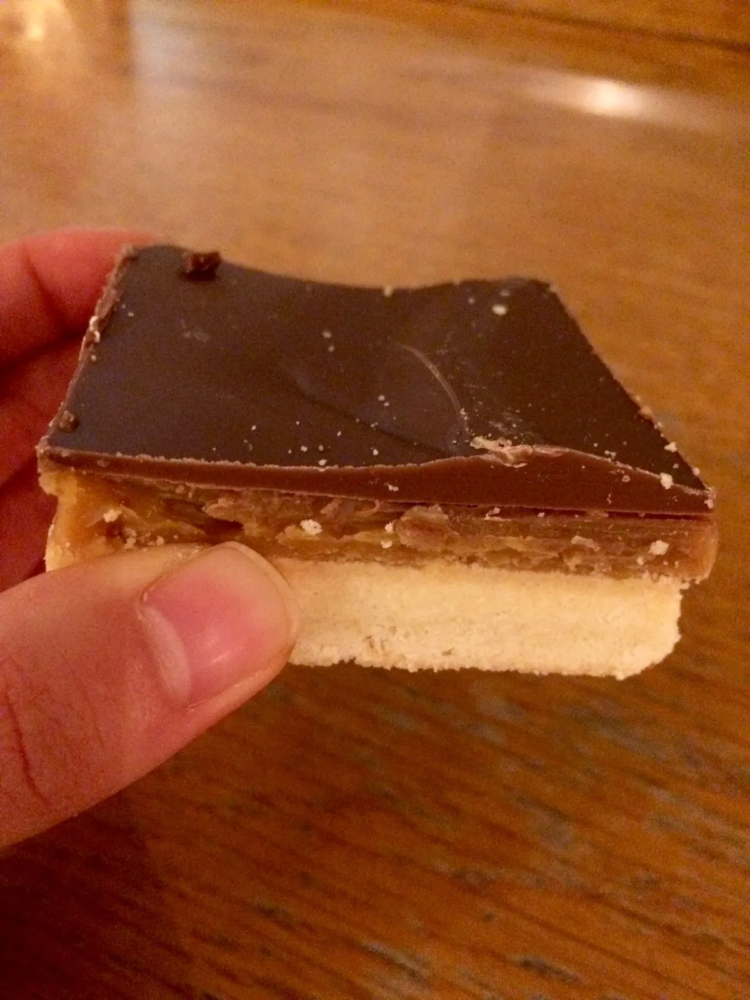
Waited in line to see a view of the city lights from the top of the Sky Garden:
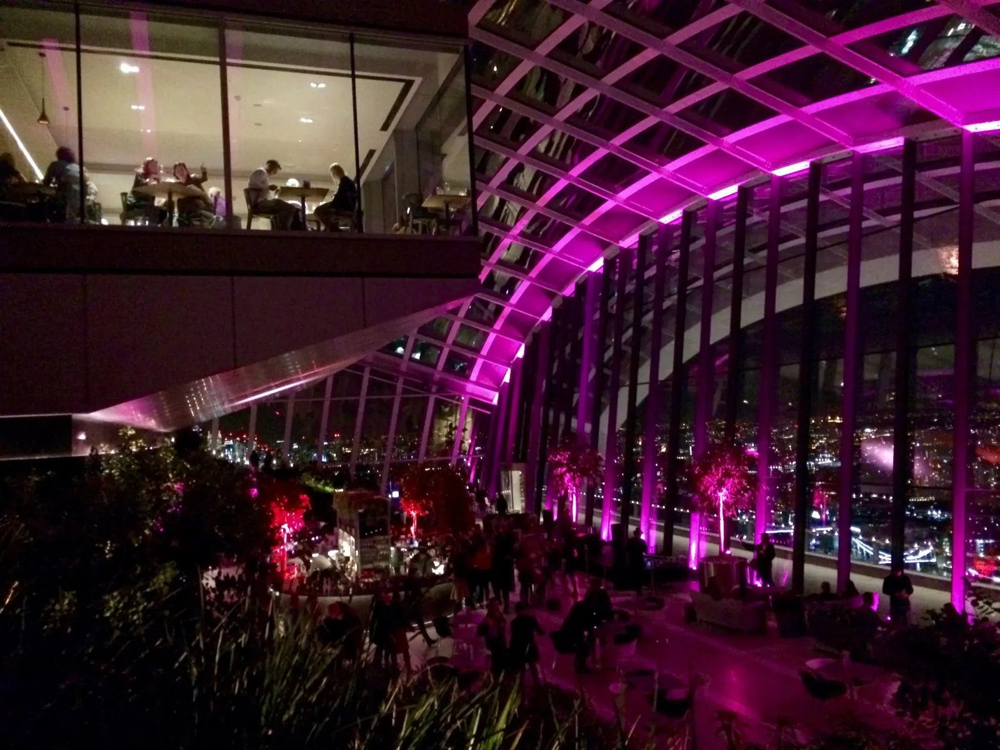
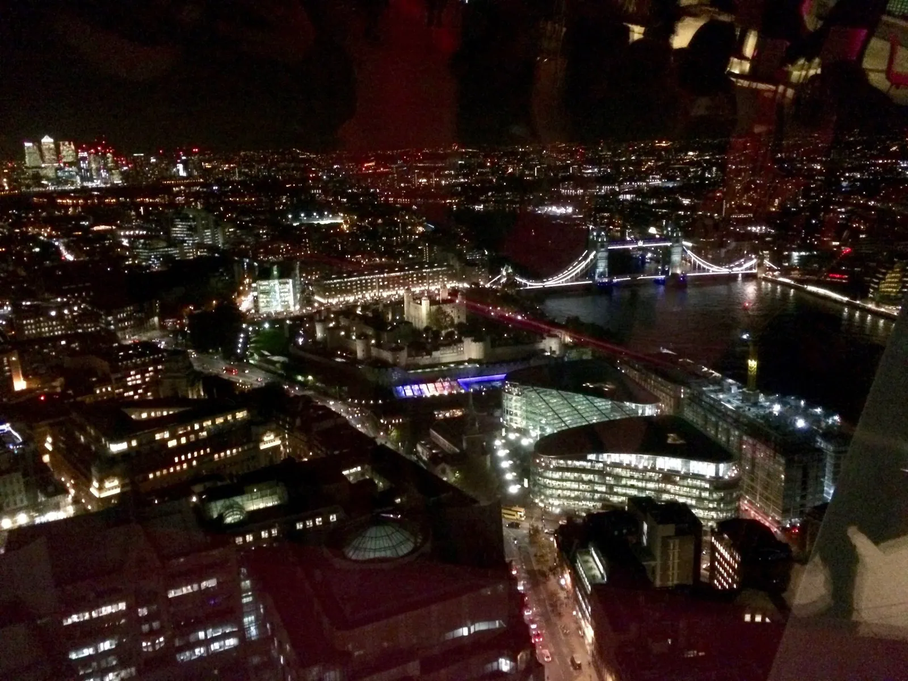
Grabbed a sandwich at Costa before meeting Claudia at Queens Theatre in Leicester Square. Leicester Square reminded me of Broadway—it was lively and brightly lit.
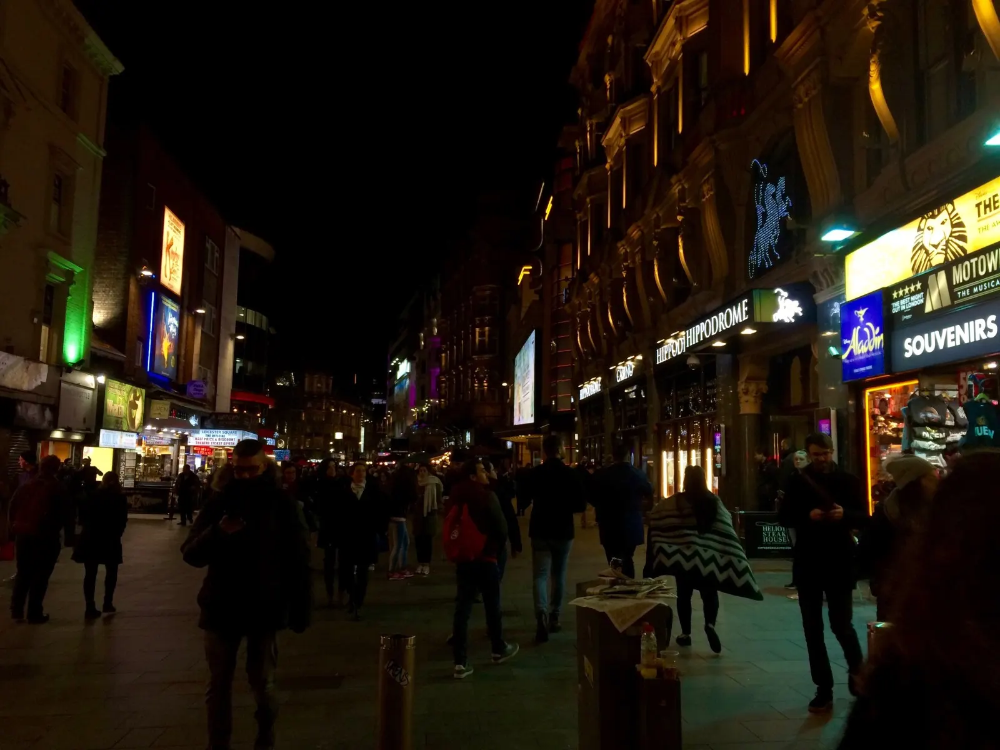
Queens Theatre had three floors—we were on the bottom one so we couldn’t see the top of the set, but most of the action was down on stage. Les Miserables was such an amazing musical; I absolutely enjoyed it. The music was so beautiful. The actors were excellent at articulating their words; I was able to understand almost all what they were singing.
The stage had a rotating circle, which created an effect of time passing by, people doing their daily routine, and people moving about, which was pretty cool. I Teared up a bit when Fontine died, and the gunshots were frightening—the little boy was shot three times, and each one made me jolt in my seat.
During the 2nd half of the show someone behind us kept sneezing, which disrupted my ability to pay attention to the action on stage for a while. I know she can’t help it, but it did sound like she wasn’t covering her mouth.
The audience was the most lively one I’ve seen at a musical: people cheered rather than just applauded after a solo performance, and they reacted to the story, groaning when the little boy was shot and laughing during the comic relief scenes with the master of the house and his wife (or the master of the house and her husband?). I always like to think that if I lived a second life I would’ve tried singing or dancing or acting.
The streets were crowded and lively when we came out of the theatre 3 hours later. We walked through Chinatown, which carried a festive atmosphere with Asian restaurants lining the red-lantern-decorated streets.
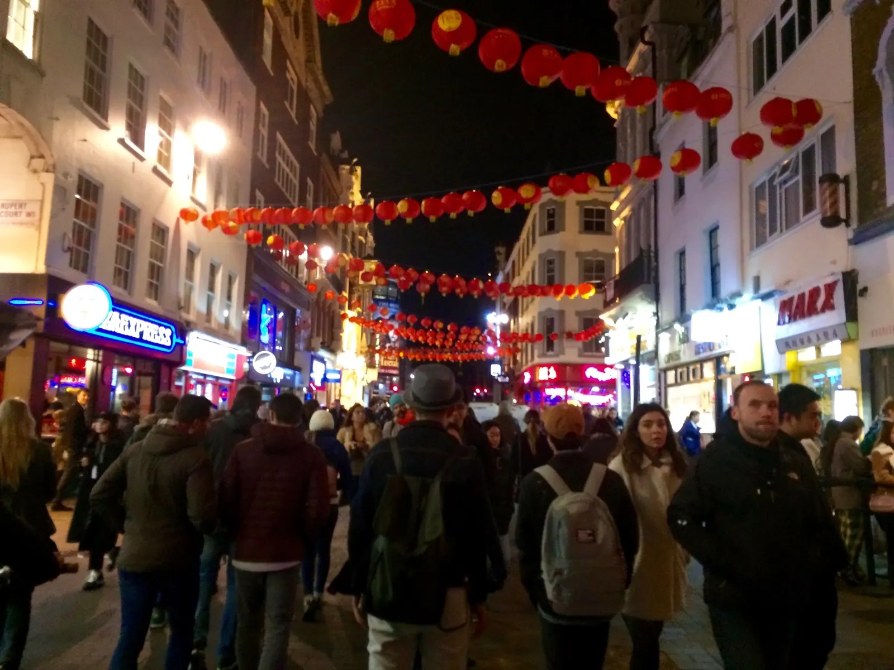
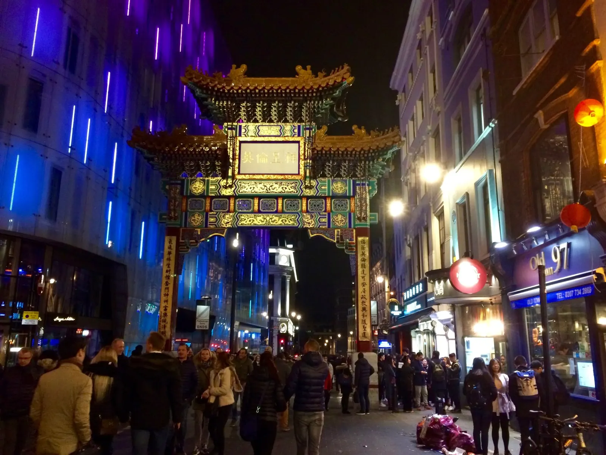
I think it’s normal to get the after-show blues—the realization afterwards that you soon have to go back to work and reality, with the tunes still humming in your head. But Claudia and I agreed that the musical was amazing and worth watching.
Saturday, November 11, 2017 – Another break from work, this time on the river
Tried crew (rowing) for the first time, knowing I would regret it if I never went out on the water while I was here.
I first attended a tank session in a simulation boat in a pool: 8 of us learned to start together in a boat. I’ve used the urg before and learned the proper technique, so was pretty confident in my ability to transition to a real boat. It turned to be harder than I expected. I had to get used to rotating the paddle, keeping it perpendicular to the water when in the water and parallel when coming out of the water, and it took me a while to get in the circle motion routine. And while being so preoccupied with this I had to remember the process of legs, body, arms and then coming back, arms, body, legs. I hadn’t attended the previous practices, and I could sense the annoyance of the students leading us, who kept telling me I was doing it wrong.
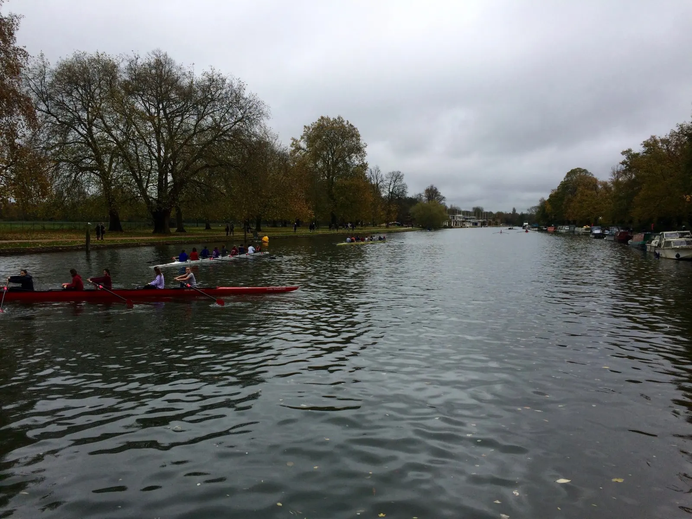
Rowing on the river was even harder. When we were going slow I was able to get into a rhythm, but just as I got into a groove we would speed up and I would lose control of my paddle, and was often off sync (and with a team, timing is key). I didn’t contribute much to our speed: I couldn’t even push off properly because my paddle wasn’t square when it was in the water or it wasn’t further enough in the water. You just drop the paddle, one of the student leaders told me matter of factly when I mentioned I had trouble getting the paddle in the water at the right time. I kept losing control and a few times the strength of the current rammed the paddle into me rather than coming out of the water like I wanted it to. I was staring hard at the person in front of me trying to follow her every move, but the paddle wouldn’t listen to me and would go into the water when I wasn’t ready yet.
I also couldn’t understand what the leader was saying, and even if I heard I wasn’t told beforehand what the terms meant; that bow is the left paddlers, stern refers to the right paddlers, stern 5 are the first five towards the front of the boat, and bow refers to the last person in boat. I assumed some of this by following what others were doing, but I wasn’t told this until afterward, when some of us were walking back to Catz.
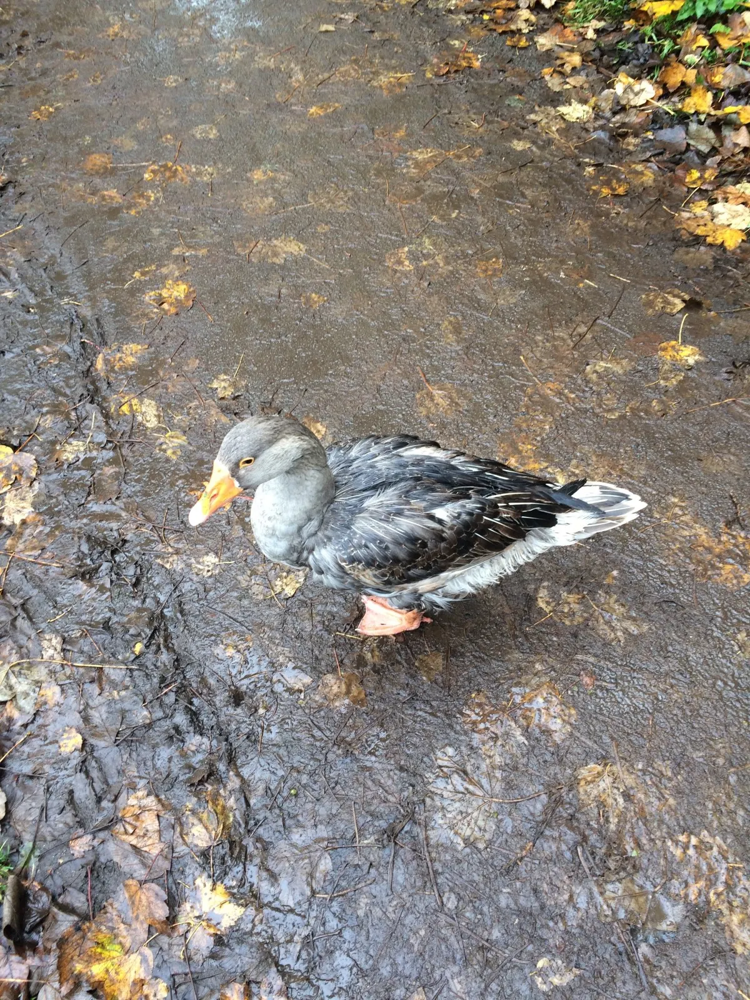
They told me I did pretty well for the first time. I meant to try this as a one-time thing, but now I want to do this again. While I was sore afterwards, legs and arms and all, I knew I didn’t get as much of a workout as I could’ve because my technique didn’t put me in the right position to be able to use my body. And plus it was a beautiful morning on the river—the drizzling rain had stopped when we were out on the water. I’ll regret it later when I struggle to finish my papers, but for now I’m glad I walked the 40 minutes out here to try rowing.
I grabbed a sandwich from Tesco’s—unlike in the States, small grocery stores selling £2 sandwiches are everywhere—and stopped by the Old Bodleian Library before going to Wadham College. I had signed up for a workout session with the tennis team, which I’m also glad I did—those mountain climbers and pushups and burpees gave me a cardio and muscle workout I had been lacking for weeks.
It’s now 4 pm and I REALLY should get started on readings for my papers, but exercising sure feels good, especially after 5 days of basically sitting in a library all day and eating much food. I’m sure to be sore tomorrow. And plus, these outdoor adventures are what I’ll remember when I think back to my study abroad highlights. #no regrets